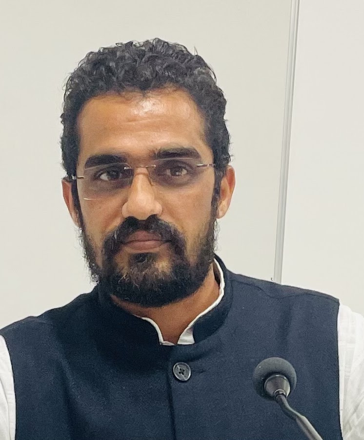

2026
Economist · New Delhi, India
Mukesh KumarHealth. Development.
Human potential.
I study how nutrition, inequality, and public policy shape health and human capital across the life course.
Economist, Center of Data for Economic Decision-making (CoDED), Pahlé India Foundation

Health economicsNutrition & human capitalSocioeconomic inequalityGender & WASH
About my work
Understanding health.
Informing policy.
I am an economist at the Pahlé India Foundation in New Delhi. My research lies at the intersection of applied development economics and health economics, with a focus on the early origins and life-course evolution of health and human capital.
I investigate how childhood nutrition relates to later health, cognitive development, and well-being, and how socioeconomic inequalities shape access to maternal and child health and nutrition programmes.
I received my PhD in Economics from the Indian Institute of Technology Roorkee in December 2025. Before joining Pahlé India Foundation, I worked as a Research Associate at the VII State Finance Commission, Haryana.
Academic background ↗Selected publications
Recent research
2024
2023
Research in progress
From childhood
to later life.
My ongoing work explores the persistence of undernutrition, cognitive outcomes and well-being, gender norms, maternal health, and the reach of public nutrition programmes.
Explore ongoing work ↗